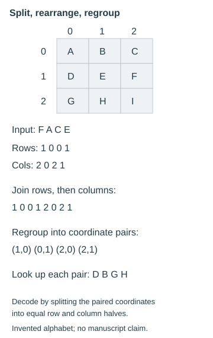

Fractionation and coordinate alphabets
Split symbols into coordinates, rearrange the components, then regroup.
On this page
Fractionation represents each symbol by several components, such as a row and column in a square. The components can then be rearranged and regrouped into new symbols. This is different from simply reading the original rune grid in another direction.
Major variants
Polybius-style coordinates, Bifid, Trifid and ADFGVX illustrate different combinations of coordinate encoding and rearrangement. Their usual alphabets do not automatically accommodate 29 runes; any adaptation must be stated.
Follow a complete coordinate example
Use an invented 3 × 3 square containing A through I in row order, with rows and columns numbered 0, 1 and 2. Each symbol becomes a pair: A is (0,0), F is (1,2), and so on. This small alphabet demonstrates the mechanism; it is not an adaptation of the manuscript alphabet.

To encode FACE as one four-symbol block, write all row coordinates followed by all column coordinates: 1 0 0 1 2 0 2 1. Regroup that stream into pairs: 10, 01, 20, 21. Looking those pairs up in the same square gives DBGH.
To decode DBGH, expand its coordinates back into the eight-number stream and split it into equal halves. Pair the first number of the first half with the first of the second half, then the second with the second, and so on. This recovers 12, 00, 02, 11, hence FACE. Simply applying the encoding procedure again is not the declared inverse.
Block boundaries change the result
Encoding FA and CE as separate two-symbol blocks gives DGBH under this same square and rule, rather than DBGH. Both use the same symbols and coordinate ordering; only the block boundary changes. A proposed search therefore needs its block lengths, starting alignment, reset rules and final-block policy recorded.
A 29-rune adaptation needs particular care with the coordinate inventory. A 5 × 6 rectangle has 30 cells, so assigning 29 runes leaves one cell unused. Rearranged coordinate pairs might point to that cell even when every input rune was valid. Declare how such outputs are represented or rejected; silently discarding them changes the method and can lose information.
Reproduce and check the illustration
python scripts/fractionation_example.pyThe standard-library script generates the figure and a small JSON report. It checks both encoding-then-decoding and decoding-then-encoding for every nine-symbol input of lengths 1 through 4: 7,380 inputs in total. This verifies the toy rule over those lengths, not the identification or recovery of a Liber Primus cipher. Download script · Download report.
What a test must specify
Specify the coordinate alphabet, grid dimensions, unused cells, key ordering, block length, component traversal and regrouping rule. State how incomplete final blocks are handled. Each choice is part of the search space.
How to evaluate a result
Check that encoding and decoding are inverses under the chosen scheme. Use known-answer examples with the same alphabet size and block rules. Compare language-ranked results with equal-budget searches on controls.
Documented experiments
No completed experiment is linked to this family in the current catalog. That describes Liberpedia’s coverage, not whether the method has been tried elsewhere or whether it is promising.
All solving-method families · Search space and bounds · Documenting a test · Have we tried it?